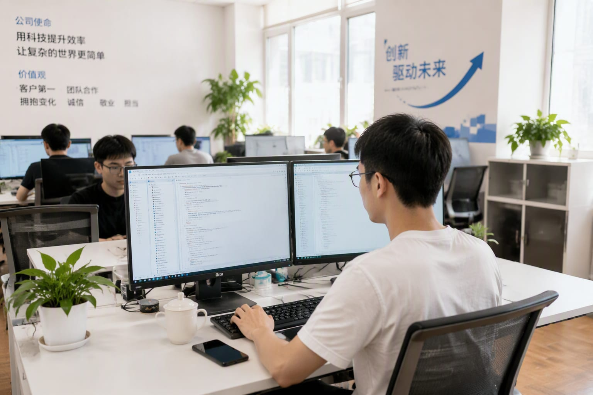

Two releases, four days apart, bracketing the open-weight market from both ends. Alibaba is pressing Meta from the top and the bottom at once.

Alibaba released Qwen3.8-2.4T-A95B as open weights on August 13 — a 2.4-trillion-parameter MoE flagship — and followed it on August 18 with Qwen3.8-27B, sized for consumer laptops.
The flagship targets developers who need frontier-class reasoning without API economics; the 27B brings the same family to local machines.
Together they make the Qwen line a full-stack answer to Meta’s open-weight franchise.
Five major Chinese open releases landed in eight weeks this summer.
Developer download numbers suggest teams are re-evaluating, not just bookmarking.
Model selection has become a weekly re-evaluation.
“Alibaba open-sourced its 2.4-trillion-parameter flagship Qwen3.8-2.4T-A95B on August 13, and shipped the laptop-runnable Qwen3.8-27B on August 18 — going head-to-head with Meta.”